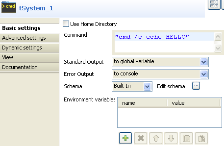
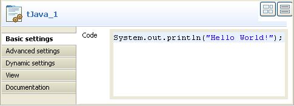

Scenario: Echo `Hello World!'
This scenario is a two-component job showing a message in the Log.
- Click and drop a tSystem and a tPerl component onto the workspace.
- Right-click on tSystem, and pull a ThenRun link between the two components. When executing the job, the first component will then trigger before the second one.
- Click on the tSystem and select the Properties tab:
- Enter the echo command and string "Hello World!" to be displayed
- Select To a global variable option as Output to include the command output value into
- Then select the tPerl component
- Enter a Perl command to display the tSystem output variable in the console.
- Go to the Run Job tab and execute the job.



The job executes an echo command and shows the output in the Log using a Print command in the tPerl component.